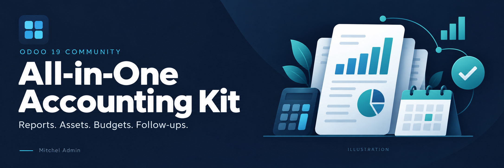

<section class="oe_container">
    <div class="container" style="max-width:1120px; color:#343a40; font-family:Arial,sans-serif;">
        <div class="row">
            <div class="col-12 mb-4">
                
            </div>
        </div>

        <div class="text-center px-3 py-4">
            <p style="color:#714b67; font-size:13px; font-weight:700; letter-spacing:2px;">BUILT FOR ODOO 19 COMMUNITY</p>
            <h1 style="color:#212529; font-size:38px; font-weight:700;">All-in-One Accounting Kit</h1>
            <p class="mx-auto mt-3" style="max-width:780px; color:#495057; font-size:18px; line-height:1.7;">
                Bring financial reports, asset management, budgets, customer follow-ups,
                recurring payments and fiscal year closing into one accounting application.
                Give your Community accounting team the tools to review balances,
                track daily transactions and manage period-end work.
            </p>
            <div class="my-4">
                <span class="badge px-3 py-2 m-1" style="color:#343a40; border:1px solid #dee2e6;">Odoo 19 Community</span>
                <span class="badge px-3 py-2 m-1" style="color:#343a40; border:1px solid #dee2e6;">One consolidated application</span>
                <span class="badge px-3 py-2 m-1" style="color:#343a40; border:1px solid #dee2e6;">PDF accounting reports</span>
            </div>
        </div>

        <div class="row text-center mb-5">
            <div class="col-md-4 mb-3">
                <div class="h-100 p-4" style="border-radius:16px;">
                    <h3 style="color:#212529; font-size:20px; font-weight:700;">Understand your accounts</h3>
                    <p class="mb-0" style="color:#495057; line-height:1.7;">Review financial statements, ledgers, tax summaries and outstanding balances.</p>
                </div>
            </div>
            <div class="col-md-4 mb-3">
                <div class="h-100 p-4" style="border-radius:16px;">
                    <h3 style="color:#212529; font-size:20px; font-weight:700;">Organize recurring work</h3>
                    <p class="mb-0" style="color:#495057; line-height:1.7;">Manage depreciation schedules, payment plans, budgets and customer reminders.</p>
                </div>
            </div>
            <div class="col-md-4 mb-3">
                <div class="h-100 p-4" style="border-radius:16px;">
                    <h3 style="color:#212529; font-size:20px; font-weight:700;">Prepare for period closing</h3>
                    <p class="mb-0" style="color:#495057; line-height:1.7;">Review daily books, define fiscal years and manage accounting lock dates.</p>
                </div>
            </div>
        </div>

        <div class="p-4 p-md-5 mb-5" style="border-radius:20px;">
            <p style="color:#714b67; font-size:13px; font-weight:700; letter-spacing:2px;">FINANCIAL REPORTS</p>
            <h2 style="color:#212529; font-size:30px; font-weight:700;">From daily entries to the bigger picture.</h2>
            <p class="mb-4" style="color:#495057; line-height:1.7;">Explore your accounts through dedicated reporting wizards and printable PDF reports. Available filters vary by report.</p>
            <div class="row">
                <div class="col-md-6 mb-4">
                    <h3 style="color:#212529; font-size:20px;">Financial statements</h3>
                    <ul class="pl-3" style="color:#495057; line-height:2;">
                        <li><strong>Balance Sheet</strong> &mdash; review assets, liabilities and equity.</li>
                        <li><strong>Profit and Loss</strong> &mdash; review income and expenses.</li>
                        <li><strong>Trial Balance</strong> &mdash; compare debit, credit and account balances.</li>
                    </ul>
                </div>
                <div class="col-md-6 mb-4">
                    <h3 style="color:#212529; font-size:20px;">Ledgers and tax reporting</h3>
                    <ul class="pl-3" style="color:#495057; line-height:2;">
                        <li><strong>General Ledger</strong> &mdash; examine movements by account.</li>
                        <li><strong>Partner Ledger</strong> &mdash; review partner transactions and balances.</li>
                        <li><strong>Tax Reports</strong> &mdash; summarize configured taxes and tax bases.</li>
                    </ul>
                </div>
                <div class="col-md-6 mb-2">
                    <h3 style="color:#212529; font-size:20px;">Receivables and payables</h3>
                    <ul class="pl-3" style="color:#495057; line-height:2;">
                        <li><strong>Aged Partner Balance</strong> &mdash; group outstanding balances by age.</li>
                        <li><strong>Aged Receivable</strong> &mdash; select receivable accounts to review customer balances.</li>
                        <li><strong>Aged Payable</strong> &mdash; select payable accounts to review supplier balances.</li>
                    </ul>
                    <p style="color:#495057; font-size:13px;">Aged Receivable and Aged Payable use the account selection in the Aged Partner Balance wizard.</p>
                </div>
                <div class="col-md-6 mb-2">
                    <h3 style="color:#212529; font-size:20px;">Journal review</h3>
                    <ul class="pl-3" style="color:#495057; line-height:2;">
                        <li><strong>Journals Audit Reports</strong> &mdash; inspect entries from selected journals.</li>
                        <li><strong>Journal Entries</strong> &mdash; print journal entry details.</li>
                    </ul>
                </div>
            </div>
        </div>

        <div class="text-center mb-4">
            <p style="color:#714b67; font-size:13px; font-weight:700; letter-spacing:2px;">ACCOUNTING TOOLS, TOGETHER</p>
            <h2 style="color:#212529; font-size:30px; font-weight:700;">Manage more of your accounting workflow.</h2>
            <p style="color:#495057; font-size:17px;">A connected set of tools inside Odoo Community.</p>
        </div>
        <div class="row">
            <div class="col-md-6 mb-4">
                <div class="h-100 p-4" style="border:1px solid #dee2e6; border-top:4px solid #714b67; border-radius:16px;">
                    <p style="color:#714b67; font-size:12px; font-weight:700; letter-spacing:2px;">ASSETS</p>
                    <h3 style="color:#212529; font-size:23px; font-weight:700;">Asset Management</h3>
                    <p style="color:#495057; line-height:1.7;">Track the value of company assets and organize their depreciation.</p>
                    <ul class="pl-3 mb-0" style="line-height:1.9;">
                        <li>Asset categories and accounting configuration.</li>
                        <li>Linear and degressive depreciation methods.</li>
                        <li>Depreciation schedules and journal entries.</li>
                        <li>Create assets from invoice lines with an asset category.</li>
                        <li>Asset disposal and depreciation reporting.</li>
                    </ul>
                </div>
            </div>
            <div class="col-md-6 mb-4">
                <div class="h-100 p-4" style="border:1px solid #dee2e6; border-top:4px solid #714b67; border-radius:16px;">
                    <p style="color:#714b67; font-size:12px; font-weight:700; letter-spacing:2px;">PLANNING</p>
                    <h3 style="color:#212529; font-size:23px; font-weight:700;">Budget Management</h3>
                    <p style="color:#495057; line-height:1.7;">Compare financial plans with actual activity over a defined period.</p>
                    <ul class="pl-3 mb-0" style="line-height:1.9;">
                        <li>Budgetary positions and budget lines.</li>
                        <li>Planned, practical and theoretical amounts.</li>
                        <li>Analytic account links and budget achievement percentages.</li>
                        <li>Draft, confirm, validate and close budget workflows.</li>
                    </ul>
                </div>
            </div>
            <div class="col-md-6 mb-4">
                <div class="h-100 p-4" style="border:1px solid #dee2e6; border-top:4px solid #714b67; border-radius:16px;">
                    <p style="color:#714b67; font-size:12px; font-weight:700; letter-spacing:2px;">DAILY OVERVIEW</p>
                    <h3 style="color:#212529; font-size:23px; font-weight:700;">Accounting Dashboard</h3>
                    <p style="color:#495057; line-height:1.7;">Use Odoo Community's standard accounting journal dashboard as the starting point for daily accounting work.</p>
                    <ul class="pl-3 mb-0" style="line-height:1.9;">
                        <li>Access journal cards and their standard accounting actions.</li>
                        <li>Work with sales, purchase, bank and cash journals.</li>
                        <li>Open the kit's reports and tools from Accounting menus.</li>
                    </ul>
                </div>
            </div>
            <div class="col-md-6 mb-4">
                <div class="h-100 p-4" style="border:1px solid #dee2e6; border-top:4px solid #714b67; border-radius:16px;">
                    <p style="color:#714b67; font-size:12px; font-weight:700; letter-spacing:2px;">COLLECTIONS</p>
                    <h3 style="color:#212529; font-size:23px; font-weight:700;">Customer Follow Up</h3>
                    <p style="color:#495057; line-height:1.7;">Organize follow-up work around outstanding customer balances.</p>
                    <ul class="pl-3 mb-0" style="line-height:1.9;">
                        <li>Configure follow-up levels and reminder delays.</li>
                        <li>Prepare email reminders and printable follow-up letters.</li>
                        <li>Assign responsible users and record the next action.</li>
                        <li>Review overdue amounts and follow-up history.</li>
                    </ul>
                </div>
            </div>
            <div class="col-md-6 mb-4">
                <div class="h-100 p-4" style="border:1px solid #dee2e6; border-top:4px solid #714b67; border-radius:16px;">
                    <p style="color:#714b67; font-size:12px; font-weight:700; letter-spacing:2px;">REPEATABLE PAYMENTS</p>
                    <h3 style="color:#212529; font-size:23px; font-weight:700;">Recurring Payment</h3>
                    <p style="color:#495057; line-height:1.7;">Set up recurring payment plans for repeated incoming or outgoing payments.</p>
                    <ul class="pl-3 mb-0" style="line-height:1.9;">
                        <li>Reusable templates with a payment journal.</li>
                        <li>Daily, weekly, monthly or yearly intervals.</li>
                        <li>Start and end dates with scheduled payment lines.</li>
                        <li>Generate Odoo payment records for due lines.</li>
                    </ul>
                </div>
            </div>
            <div class="col-md-6 mb-4">
                <div class="h-100 p-4" style="border:1px solid #dee2e6; border-top:4px solid #714b67; border-radius:16px;">
                    <p style="color:#714b67; font-size:12px; font-weight:700; letter-spacing:2px;">DAILY REPORTS</p>
                    <h3 style="color:#212529; font-size:23px; font-weight:700;">Day Book, Cash Book &amp; Bank Book</h3>
                    <p style="color:#495057; line-height:1.7;">Review day-to-day accounting activity with dedicated reporting wizards.</p>
                    <ul class="pl-3 mb-0" style="line-height:1.9;">
                        <li><strong>Day Book:</strong> review journal activity over a selected date range.</li>
                        <li><strong>Cash Book:</strong> inspect cash-account transactions and balances.</li>
                        <li><strong>Bank Book:</strong> inspect bank-account transactions and balances.</li>
                        <li>Select dates, journals and entry status, with options varying by report.</li>
                    </ul>
                </div>
            </div>
        </div>

        <div class="p-4 p-md-5 my-4" style="border:1px solid #dee2e6; border-radius:20px;">
            <div class="row align-items-center">
                <div class="col-md-5 mb-3">
                    <p style="color:#714b67; font-size:12px; font-weight:700; letter-spacing:2px;">PERIOD-END CONTROL</p>
                    <h2 style="color:#212529; font-size:29px; font-weight:700;">Fiscal Year and Closing</h2>
                    <p class="mb-0" style="color:#495057; line-height:1.7;">Manage fiscal years and year-end closing with fiscal periods and accounting lock dates.</p>
                </div>
                <div class="col-md-7">
                    <ul class="pl-3 mb-0" style="line-height:2;">
                        <li>Create fiscal years with a name, company, start date and end date.</li>
                        <li>Configure the last day and month of the fiscal year.</li>
                        <li>Use the lock-date wizard to manage fiscal, sales, purchase, tax and hard lock dates.</li>
                        <li>Restrict changes to closed periods through Odoo's lock-date controls.</li>
                    </ul>
                </div>
            </div>
        </div>

        <div class="py-5">
            <div class="text-center mb-4">
                <h2 style="color:#212529; font-size:29px; font-weight:700;">A straightforward place to start.</h2>
                <p style="color:#495057;">Install once, configure your company, and choose the tools your team needs.</p>
            </div>
            <div class="row">
                <div class="col-md-4 mb-3">
                    <p style="color:#714b67; font-size:24px; font-weight:700;">01</p>
                    <h3 style="color:#212529; font-size:19px; font-weight:700;">Install the kit</h3>
                    <p style="color:#495057; line-height:1.7;">Install All-in-One Accounting Kit on Odoo 19 Community. It uses Odoo's Accounting and Mail applications.</p>
                </div>
                <div class="col-md-4 mb-3">
                    <p style="color:#714b67; font-size:24px; font-weight:700;">02</p>
                    <h3 style="color:#212529; font-size:19px; font-weight:700;">Configure your accounting</h3>
                    <p style="color:#495057; line-height:1.7;">Set up your chart of accounts, journals and taxes, then configure assets, budgets or payment plans as needed.</p>
                </div>
                <div class="col-md-4 mb-3">
                    <p style="color:#714b67; font-size:24px; font-weight:700;">03</p>
                    <h3 style="color:#212529; font-size:19px; font-weight:700;">Review and manage</h3>
                    <p style="color:#495057; line-height:1.7;">Open reports, manage customer follow-ups and prepare your fiscal period for closing.</p>
                </div>
            </div>
        </div>

        <div class="p-4 mb-5" style="border:1px solid #dee2e6; border-radius:16px;">
            <h2 class="mb-4" style="color:#212529; font-size:26px; font-weight:700;">Before you install</h2>
            <h3 style="color:#212529; font-size:17px; font-weight:700;">Which Odoo edition is this for?</h3>
            <p style="color:#495057; line-height:1.7;">This listing targets Odoo 19 Community. The module depends on Accounting and Mail; it does not require an Enterprise addon.</p>
            <h3 style="color:#212529; font-size:17px; font-weight:700;">Does it include a separate business intelligence dashboard?</h3>
            <p style="color:#495057; line-height:1.7;">The accounting overview uses Odoo's standard journal dashboard. The kit adds accounting reports and operational tools alongside it.</p>
            <h3 style="color:#212529; font-size:17px; font-weight:700;">Can it replace an existing accounting kit?</h3>
            <p class="mb-0" style="color:#495057; line-height:1.7;">Existing standalone accounting addons may share models and data with this kit. Contact support to review migration before replacing them in an existing database.</p>
        </div>

        <div class="text-center p-4 p-md-5 mb-4" style="border-radius:20px;">
            <h2 style="color:#212529; font-size:28px; font-weight:700;">Questions about your accounting setup?</h2>
            <p class="mt-3" style="color:#495057; line-height:1.7;">Contact Mitchel Admin for module questions, installation guidance and migration enquiries.</p>
            <a href="mailto:erpmitchellodoo@gmail.com" class="btn btn-outline-secondary px-4 py-3 mt-2" style="color:#212529; font-weight:700; border-radius:10px;">erpmitchellodoo@gmail.com</a>
            <p class="mt-4 mb-0" style="color:#495057; font-size:13px;">All-in-One Accounting Kit &middot; Odoo 19 Community &middot; Mitchel Admin</p>
        </div>
    </div>
</section>
